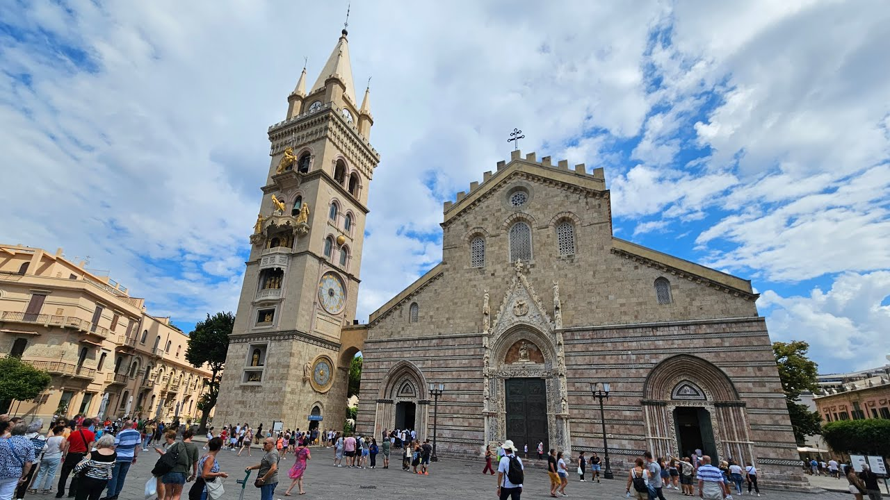

La Piazza del Duomo di Messina è il cuore storico della città, dominata dalla maestosa Cattedrale normanna fondata nell'XI secolo e ricostruita dopo il devastante terremoto del 1908. La piazza ospita due delle opere più straordinarie della città: l'orologio astronomico più grande e complesso al mondo e la splendida Fontana di Orione.
La piazza è un luogo di aggregazione e cultura, punto di partenza ideale per esplorare il centro storico di Messina con i suoi palazzi novecenteschi ricostruiti dopo il terremoto.
Le attrazioni principali sono:
Posizione: Nel cuore del centro storico di Messina, accessibile da via I Settembre e via Garibaldi.